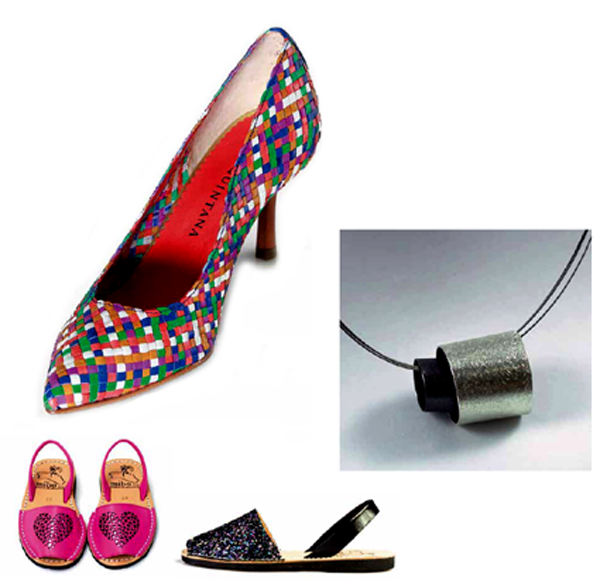

Indústria i artesania, amb segell propi
Els menorquins saben que la seva és una terra privilegiada, que els ofereix tot un conjunt de matèries primeres que han de ser acuradament modificades per tal d'obtenir-ne productes de gran valor. És a partir d'aquesta norma que han donat forma a un entramat industrial que ha sabut exportar les seves senyes d'identitat a gairebé tot el món.
Sens dubte, el calçat és un dels emblemes de la indústria menorquina. Els fabricants han apostat per la qualitat i el disseny, i les seves sabates porten incloses la personalitat i la passió insular del que està ben fet. Menorca és el bressol de grans marques que han creat un segell personal reconegut en el món sencer. Sabates que calcen les estrelles de Hollywood, ideades i creades en una petita illa de la Mediter-rània. I si a Menorca es parla de calçat, és obligatori recordar les avarques, un cal-çat que va néixer al camp i que s'ha estès gràcies a la seva comoditat i senzillesa. Actualment poden trobar-se milers de models que fan d'elles un recurs apropiat per a qualsevol ocasió. Recordi, les autèntiques avarques són de Menorca.
Un altre dels emblemes de la indústria menorquina ha estat sempre la bijuteria. L'Illa ha viscut èpoques de gran esplendor, en què era referent en tot el món, i fins i tot avui conserva un important teixit empresarial dedicat a aquest sector.
Menorca no s'entén sense el mar, i els menorquins han sabut donar forma als llaüts, embarcacions construïdes en l'Illa i preparades per solcar el mar amb tota co-moditat. Sense presses, com ha de ser en aquesta illa. Sense màquines, també són capaços treure partit d'allò que la terra els dóna. Ja ho feren segles enrere quan sembraren l'Illa de kilòmetres de paret seca, murs sense ciment ni formigó, només amb el suport de l'art de col•locar les pedres unes sobre les altres amb una tècnica tal que, tot i el pas dels segles, segueixin en peu.
Actualment l'artesania insular ofereix moltes cares: ceràmica, productes agroali-mentaris, productes elaborats amb fusta, joies, roba... No perdi l'oportunitat de visitar algun dels mercats artesanals de l'Illa, i deixi's embriagar per l'essència d'a-quells que treballen la matèria primera directament amb les seves mans.